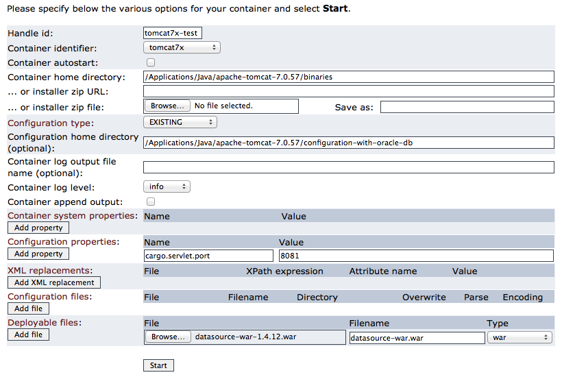
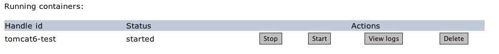

Introduction
The Cargo Daemon is a Web-based application that uses the Cargo API to configure, start and stop containers on a remote machine.
The daemon is meant to be listening 24/7, to allow users to deploy new containers and web applications at their command.
It can be accessed using a browser-based UI, via Java API, Ant tasks or Maven 3 plugin.
Why use the Cargo Daemon?
Most web containers (e.g. Tomcat, Jetty) provide built-in remote deployment facilities already, also many of them already have daemon integrations; so why use the Cargo Daemon?
- During intense redeployment (i.e., testing and even sometimes QA or production hot deployments): All of the remote deployment facilities that keep the JVM alive will eventually suffer from the dreaded
java.lang.OutOfMemoryError: PermGen space exception if something in the web application is leaking memory.
Most web containers try their best to track down these 'dead' objects and forcefully remove them, but it does not always succeed to reclaim the memory. With a leaking web application, the available memory starts to shrink after each redeploy, and eventually the memory is exhausted.
The only solution to this is to kill the JVM, and restart it. And that is exactly what the Cargo Daemon tries to manage. It will try to shutdown the web application cleanly, but if that fails it will forcefully kill the JVM.
It is the only way to guarantee that a new version of your web application always starts when you want it to.
- In heterogeneous environments: With Cargo, the way you configure the container is independent from the underlying server: you can set the different configuration properties, define datasources, add deployables, etc. transparently. You can therefore use the Cargo Daemon as a container-independent daemon, with support for the generation of the proper configuration on all supported containers.
- During upgrades and/or application server product evaluations: As Cargo is not dependent on the application server nor on its version, you can easily reuse an existing Cargo Daemon setup to use it for another version of a container, or another container altogether; without having to worry about understanding how to configure it.
Table of Contents
The documentation for the Cargo Daemon includes:
Installation
To install and run the Cargo Daemon:
- Download the Cargo Daemon from the Downloads page
- Execute by typing:
java -jar cargo-daemon-webapp-<version>.war
where <version> is the version number of the daemon that you have downloaded.
By default, the Cargo Daemon will run on HTTP port 18000. To change it, use the -p option:
java -jar cargo-daemon-webapp-<version>.war -p 18001
Additionally, Cargo Daemon will save log files in the cargo home directory unless the -nologging option is used.
Note that the Cargo Daemon is a WAR file; you can actually also deploy it as a WAR on any existing container. This can be useful if you want to, for example, reuse a certain security configuration.
The daemon also accepts other parameters, in the form of system properties:
|
Property name |
Description |
Mandatory? |
Default value |
|
daemon.home
|
Directory in which the standaone daemon server stores its files. These include the temporary files (such as its own WAR and server temporary files) as well as the server log files (AWS-xxxxxxxxxxxxx.log, where xxxxxxxxxxxxx is the timestamp at which the deamon was started).
This property is not used and completely ignored if the daemon WAR file is deployed on an existing container. |
👎 |
${user.home}/.cargo
|
|
cargo.home
|
Directory in which the daemon (be it standalone or deployed on an existing container) stores the list of containers, downloaded container archives, container logs, etc. |
👎 |
${user.home}/.cargo
Note that the standalone daemon by default sets this to ${daemon.home} |
Getting started using the browser UI
To use the Cargo Daemon via the browser UI, simply open http://<machine>:<port>/ -where <machine> is the machine host name or IP address and <port> is the port number used (default is 18000):
- To start a container, fill in the form and press Start:

Note: The start button is actually equivalent to a restart in Cargo's terms, i.e. in the case a container with the same handle id already exists then it will be stopped first before your container is started. This also implies that in case the new container fails to start, the old one will not be restarted.
- To stop, restart, delete or view logs of a container, use the actions on the containers list:

- The Cargo Daemon keeps a persistent record on disk of all the containers that have been submitted. Containers that have been submitted will stay in the list, even when they are stopped. This allows you to manually restart them, or view the logs even after the container is stopped.
- If you want the container to be removed from the list, simply press the delete button.
- Containers can also be submitted with the
autostart property, this will automatically restart the container if the daemon notices it is stopped.
Getting started with the Java API / ANT tasks / Maven 3 plugin
As stated before, the Cargo Daemon is also available programmatically:
|